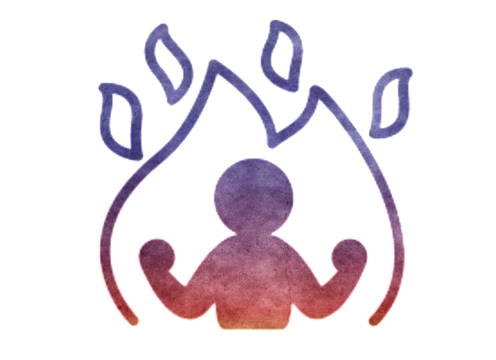
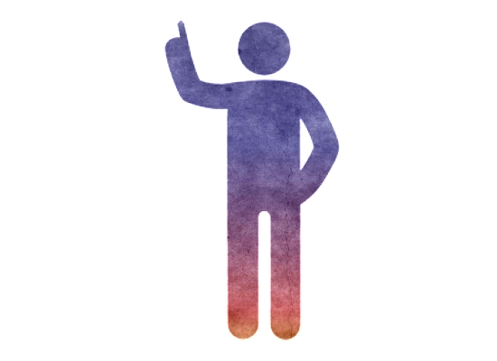

Habilidades del Modder
El modder o fan-programador, es la persona encargada de generar los cambios dentro de los proyectos de modding.
Estas personas crean los mods que se distribuyen en la red para ser jugados por los usuarios finales de un
videojuego. Para que un modder pueda tener buenos resultados en sus proyectos, es necesario que se trabaje las
siguientes habilidades:
-
Motivación: La motivación es el motor de un proyecto modding. Gracias a esta,
los integrantes del equipo proponen ideas, buscan herramientas y realizan planeaciones en el
desarrollo del mod.
|

|
|
|
Orden: El orden permite acceder a los recursos y el trabajo desarrollado en
forma óptima, evitando pérdidas de tiempo y retrabajo.
|
|
Disciplina: Para lograr un objetivo, la disciplina es fundamental. Ya que el
trabajo en una forma indisciplinada produce cortes creativos y pérdidas en la noción del tiempo y las
tareas pendientes.
|

|
|
|
Talento: Si bien existen personas que poseen un talento innato para realizar ciertas
actividades de forma sencilla. Es posible mediante el trabajo y la dedicación lograr mejorar aptitudes
y con ello ganar experiencia para realizar las actividades como un profesional.
|
|
Creatividad: la creatividad permite el flujo de ideas en el grupo y con ello se aporta en
innovación.
|
|
|
|
Capacidad de Administración: Es importante trabajar en esta habilidad, ya que se requieren
en un proyecto de modding administrar el tiempo, los recursos y los integrantes para lograr un trabajo bien
hecho.
|
|
Comunicación: La comunicación es una de las habilidades más importantes dentro de un
equipo de modding. Ya que de esta forma las ideas, conceptos e información viajan dentro del equipo
transformandose en material de desarrollo. Esta habilidad de comunicación también en muy útil para dar a
conocer el producto final a la comunidad asociada y lograr su mayor divulgación.
|
|
|